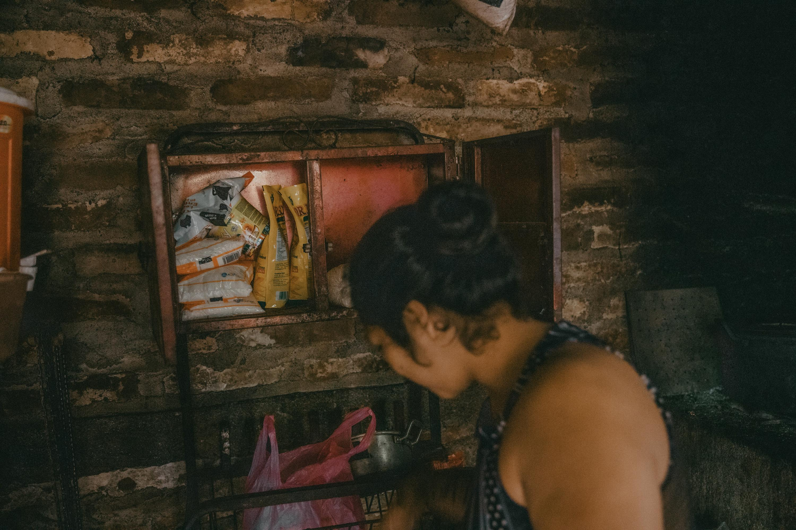

In remote communities across the mountains of Berlín, Usulután, families like Anna—a single mother raising three young daughters—face daily challenges in accessing basic food supplies. Limited local employment, lack of running water, and long journeys to nearby towns make food stability a constant battle.
In these rural zones, meals often rely entirely on local seasonal crops like chipilín, izote flower, or plantains. Skipping meals or reducing portions to two times a day is a reality for many households when daily wage work in coffee farms or agriculture becomes scarce.
"When emergency food packages arrive, they truly save us from hunger. My biggest concern is making sure my youngest daughter has milk and proper nutrition every single day."
Through humanitarian assistance networks and coordinated community distributions, emergency kits containing essential dry goods (rice, beans, fortified flour, oil, and milk powder) are brought directly to these high-need areas, providing immediate nutrition for growing children.
Transparencia y Cita:This story is inspired by testimonies about the food security situation in the rural areas of Berlín, Usulután, documented in research on community vulnerability in El Salvador. The names and details have been adapted to respect the families' privacy.